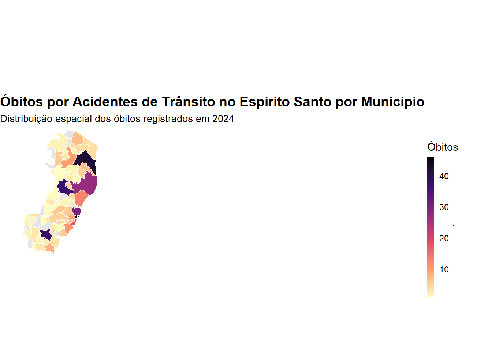

# Carregar pacotes necessários
library(readr)
library(dplyr)
library(plotly)
library(lubridate)
library(stringr)
library(geobr)
library(ggplot2)
# Importar o dataset
dados <- read_delim("DO24OPEN.csv", delim = ";", escape_double = FALSE, trim_ws = TRUE)
# Selecionar colunas relevantes
colunas_interesse <- c(
"IDADE", "DTOBITO", "HORAOBITO", "RACACOR", "CODMUNRES",
"ESTCIV", "LOCOCOR", "CODMUNOCOR", "ASSISTMED", "CAUSABAS", "NECROPSIA"
)
dados_filtrados <- dados %>% select(all_of(colunas_interesse))
# Filtrar registros do Espírito Santo (códigos de município iniciados por '32')
dados_es <- dados_filtrados %>%
filter(startsWith(as.character(CODMUNRES), "32"))
# Filtrar registros com causas de acidente de trânsito (CID-10: V01 a V89)
dados_acidentes_transito <- dados_es %>%
filter(grepl("^V(0[1-9]|[1-7][0-9]|8[0-9])", CAUSABAS))
# Criar nova coluna com mês e ano do óbito
dados_acidentes_transito <- dados_acidentes_transito %>%
mutate(MES_OBITO = format(dmy(DTOBITO), "%Y-%m"))Introdução
Este relatório apresenta uma análise dos óbitos por acidentes de trânsito ocorridos no estado do Espírito Santo no ano de 2024, com base nos dados do Sistema de Informações sobre Mortalidade (SIM). O objetivo é explorar padrões de mortalidade relacionados a esses eventos, identificar perfis das vítimas e avaliar possíveis fatores associados aos acidentes, utilizando técnicas de visualização e análise de dados.
Este projeto integra o trabalho final do módulo 2 da Capacitação em Análise de Dados para Qualificação em Gestão da Saúde, promovida pelo Instituto Capixaba de Ensino, Pesquisa e Inovação em Saúde (ICEPi).
A ocorrência de mortes por acidentes de trânsito constitui um dos maiores desafios da saúde pública no Brasil, principalmente pela sua frequência entre pessoas jovens e economicamente ativas. Estes óbitos, frequentemente evitáveis, não apenas impactam famílias e comunidades, como também geram custos significativos para o sistema de saúde. Este relatório foca na análise de dados de mortalidade por causas externas, mais especificamente os acidentes de transporte terrestre, buscando compreender o cenário no Espírito Santo e subsidiar ações voltadas à prevenção e redução desses eventos.
A análise foi realizada utilizando a linguagem de programação R e pacotes de visualização de dados, como o ggplot2, com o objetivo de explorar as principais informações contidas no dataset do SIM 2024 para o estado do Espírito Santo. Por meio de gráficos e interpretações, busca-se evidenciar as principais características desses óbitos, contribuindo para o desenvolvimento de estratégias de vigilância e segurança no trânsito.
Metodologia
Para a realização deste relatório, foi utilizado um conjunto de dados do Sistema de Informação sobre Mortalidade (SIM) referentes ao ano de 2024, focando nos registros de óbitos relacionados a acidentes de trânsito no estado do Espírito Santo. A análise foi conduzida utilizando a linguagem de programação R, que se destaca pela capacidade de manipulação, análise e visualização de dados em projetos de saúde pública.
É importante destacar que os dados utilizados para esta análise estão disponíveis apenas até o mês de agosto de 2024, uma vez que o banco de dados está em processo de tratamento e encerramento para a atualização final dos registros. Os dados completos para o ano de 2024 ainda não estão disponíveis no OpenDataSUS.
As etapas do processo de análise incluíram:
Carregamento e Limpeza dos Dados: Os dados foram importados para o R a partir de um arquivo CSV baixado do site OpenDataSUS através do link: CSV para Download. Foi realizado um filtro para selecionar os registros referentes ao estado do Espírito Santo e, especificamente, para os óbitos causados por acidentes de trânsito.
Análise Exploratória dos Dados: Utilizou-se uma abordagem descritiva para compreender a estrutura dos dados e identificar padrões iniciais. Foram aplicadas funções estatísticas para determinar a frequência de óbitos atribuídos a acidentes de trânsito, possibilitando a visualização de tendências temporais e a identificação dos principais fatores associados aos eventos, como a idade das vítimas, a localização e o tipo de acidente.
Visualização dos Dados: Para a análise gráfica, o pacote ggplot2 foi empregado na criação de diversos gráficos. Entre eles:
Gráficos de Linhas e Barras: para a visualização da distribuição temporal dos óbitos ao longo do ano, identificando possíveis picos sazonais ou mensais, e verificando a distribuição dos óbitos até o mês de agosto.
Mapas Temáticos: para representar a distribuição geográfica dos registros no Espírito Santo, contribuindo para a identificação de áreas com maior incidência dos acidentes de trânsito.
Comparações entre Subgrupos: onde se analisou, por exemplo, a incidência de óbitos por acidentes de trânsito em diferentes estados civis, sempre que esses dados estivessem disponíveis.
- Interpretação dos Resultados: A partir das visualizações e da análise estatística realizada, os resultados foram interpretados à luz da literatura sobre segurança no trânsito e saúde pública. A análise destacou as principais características dos acidentes de trânsito no Espírito Santo e buscou identificar padrões que possam orientar políticas públicas de prevenção, como a implementação de campanhas educativas, melhorias na infraestrutura viária e políticas de fiscalização.
Essa abordagem metodológica permitiu uma análise robusta dos dados de mortalidade por acidentes de trânsito, fornecendo subsídios para a proposição de intervenções que visem melhorar a segurança no trânsito e reduzir os óbitos evitáveis no estado do Espírito Santo.
Preparação dos Dados para Análise
Análise e Discussão dos Resultados
A seguir, são apresentados os principais resultados obtidos a partir da análise dos dados sobre óbitos relacionados a acidentes de trânsito no estado do Espírito Santo, com base nas notificações do Sistema de Informação sobre Mortalidade (SIM) para o ano de 2024 até o mês de agosto. Os dados foram organizados e visualizados de forma a identificar padrões e tendências significativas que possam orientar políticas públicas de segurança no trânsito e saúde.
Distribuição dos Óbitos por Acidente de Trânsito por Mês
Este gráfico mostra a quantidade de óbitos por acidentes de trânsito no estado do Espírito Santo, mês a mês, durante o ano de 2024. Ele ajuda a visualizar quais meses tiveram mais ou menos óbitos, o que pode ser útil para identificar padrões e apoiar ações de prevenção.
# Gráfico 1: Óbitos por mês
dados_acidentes_transito %>%
count(MES_OBITO) %>%
plot_ly(
x = ~MES_OBITO,
y = ~n,
type = 'scatter',
mode = 'lines+markers',
line = list(color = 'royalblue'),
marker = list(size = 6)
) %>%
layout(
title = "Óbitos por Acidente de Trânsito por Mês",
xaxis = list(title = "Mês"),
yaxis = list(title = "Quantidade de Óbitos")
)Distribuição dos Óbitos por Estado Civil
O gráfico abaixo é um treemap que mostra a distribuição dos óbitos por acidentes de trânsito no estado do Espírito Santo, agrupados por estado civil das vítimas. Esse gráfico permite observar como os óbitos estão distribuídos entre os diferentes estados civis, o que pode oferecer insights valiosos para entender possíveis padrões relacionados ao estado civil das vítimas de acidentes de trânsito.
# Gráfico 2: Óbitos por Estado Civil (Treemap)
dados_acidentes_transito %>%
mutate(ESTCIV_LABEL = case_when(
ESTCIV == "1" ~ "Solteiro(a)",
ESTCIV == "2" ~ "Casado(a)",
ESTCIV == "3" ~ "Viúvo(a)",
ESTCIV == "4" ~ "Separado(a)/Divorciado(a)",
ESTCIV == "5" ~ "União estável",
ESTCIV == "9" ~ "Ignorado",
TRUE ~ "Não informado"
)) %>%
count(ESTCIV_LABEL) %>%
plot_ly(
type = "treemap",
labels = ~ESTCIV_LABEL,
values = ~n,
parents = NA,
textinfo = "label+value"
) %>%
layout(title = "Óbitos por Estado Civil")Distribuição dos Óbitos por Local de Ocorrência
O gráfico gerado representa a distribuição dos óbitos de acordo com o local de ocorrência. Cada fatia da pizza mostra a proporção de óbitos em diferentes locais, como hospitais, vias públicas, entre outros. Esse gráfico pode ser útil para entender onde ocorrem mais frequentemente os óbitos e direcionar ações de prevenção específicas para cada tipo de local.
É importante observar essa distribuição, pois, quando o óbito ocorre em via pública, subentende-se que a vítima possivelmente não teve acesso oportuno à assistência médica.
# Gráfico 3: Local de ocorrência (Pizza)
dados_acidentes_transito %>%
mutate(LOCOCOR_LABEL = case_when(
LOCOCOR == "1" ~ "Hospital",
LOCOCOR == "2" ~ "Outros estabelecimentos de saúde",
LOCOCOR == "3" ~ "Domicílio",
LOCOCOR == "4" ~ "Via pública",
LOCOCOR == "5" ~ "Outros",
LOCOCOR == "9" ~ "Ignorado",
TRUE ~ "Não informado"
)) %>%
count(LOCOCOR_LABEL) %>%
plot_ly(
labels = ~LOCOCOR_LABEL,
values = ~n,
type = "pie"
) %>%
layout(title = "Distribuição por Local de Ocorrência")Situação de Assistência Médica nos Óbitos por Acidente de Trânsito
O gráfico mostra a situação de assistência médica nos óbitos por acidentes de trânsito no Espírito Santo. Ele destaca os casos em que houve ou não atendimento médico, além das situações com dados ignorados ou não informados. Esse dado é importante para entender a relação entre o socorro recebido e o desfecho dos casos.
Assim como o gráfico anterior, este também sugere que óbitos em via pública, na maioria das vezes, indicam ausência de assistência médica, enquanto os ocorridos em hospitais apontam que houve algum atendimento. Ambos se complementam e reforçam a importância do socorro rápido.
# Gráfico 4: Assistência médica (Pizza)
dados_acidentes_transito %>%
mutate(ASSISTMED_LABEL = case_when(
ASSISTMED == "1" ~ "Recebeu assistência médica",
ASSISTMED == "2" ~ "Não recebeu assistência médica",
ASSISTMED == "9" ~ "Assistência médica ignorada",
TRUE ~ "Não informado"
)) %>%
count(ASSISTMED_LABEL) %>%
plot_ly(
labels = ~ASSISTMED_LABEL,
values = ~n,
type = "pie"
) %>%
layout(title = "Situação de Assistência Médica nos Óbitos por Acidente de Trânsito")Mapa - Óbitos por Município de Ocorrência no ES
O gráfico a seguir apresenta a distribuição espacial dos óbitos por acidentes de trânsito nos municípios do Espírito Santo. A visualização permite identificar as áreas com maior número de óbitos, o que pode contribuir para a definição de políticas públicas mais eficazes na promoção de segurança viária e prevenção de acidentes.
# Gráfico 5: Mapa - Óbitos por Município de Ocorrência no ES
# Filtrar registros com CODMUNOCOR iniciando em 32
dados_mapa <- dados_acidentes_transito %>%
filter(startsWith(as.character(CODMUNOCOR), "32"))
# Contar óbitos por município de ocorrência
dados_obitos_municipio <- dados_mapa %>%
count(CODMUNOCOR) %>%
mutate(code_muni = as.numeric(CODMUNOCOR))
# Carregar geometria dos municípios do Espírito Santo
municipios_es <- read_municipality(code_muni = 32, year = 2022)Using year/date 2022# Padronizar código do shapefile para os primeiros 6 dígitos
municipios_es <- municipios_es %>%
mutate(code_muni = as.numeric(substr(as.character(code_muni), 1, 6)))
# Filtrar registros com CODMUNOCOR iniciando em 32
dados_mapa <- dados_acidentes_transito %>%
filter(startsWith(as.character(CODMUNOCOR), "32"))
# Contar óbitos por município (padronizando também para 6 dígitos)
dados_obitos_municipio <- dados_mapa %>%
mutate(code_muni = as.numeric(substr(as.character(CODMUNOCOR), 1, 6))) %>%
count(code_muni)
# Juntar com geometria
mapa_obitos <- municipios_es %>%
left_join(dados_obitos_municipio, by = "code_muni")
# Plotar o mapa
ggplot(data = mapa_obitos) +
geom_sf(aes(fill = n), color = "white", size = 0.2) +
scale_fill_viridis_c(
option = "magma",
na.value = "gray90",
name = "Óbitos",
direction = -1,
guide = guide_colorbar(barwidth = 0.5, barheight = 10)
) +
labs(
title = "Óbitos por Acidentes de Trânsito no Espírito Santo por Município",
subtitle = "Distribuição espacial dos óbitos registrados em 2024"
) +
theme_void() +
theme(
legend.position = c(0.9, 0.3),
legend.justification = "center",
plot.title = element_text(face = "bold", size = 14, hjust = 0),
plot.subtitle = element_text(size = 10, hjust = 0),
plot.caption = element_text(size = 8, hjust = 1)
)Warning: A numeric `legend.position` argument in `theme()` was deprecated in ggplot2
3.5.0.
ℹ Please use the `legend.position.inside` argument of `theme()` instead.
Insights Da Análise de Dados e Do Projeto como um Todo
A análise realizada sobre os dados de acidentes de trânsito no Espírito Santo, com ênfase nos óbitos ocorridos em vias públicas, trouxe à tona uma série de insights importantes que podem contribuir para a formulação de estratégias de prevenção e melhorias nas políticas públicas de segurança viária. Destacam-se os seguintes pontos:
1. Alta Gravidade dos Acidentes e Falta de Assistência Médica
A análise dos dados revelou que a maioria dos acidentes de trânsito no Espírito Santo resultam em lesões graves, com um número significativo de óbitos ocorrendo em vias públicas, sem que a vítima receba assistência médica a tempo. Implicações:
A elevada gravidade dos acidentes destaca a necessidade urgente de melhorias na estrutura de atendimento emergencial, incluindo a ampliação da presença de unidades de resgate em pontos estratégicos e a melhoria da resposta dos serviços de emergência.
A criação de corredores de ambulâncias e a capacitação de motoristas e cidadãos para a realização de primeiros socorros podem ser medidas importantes para reduzir a mortalidade nas vias públicas.
2. Predominância de Solteiros nas Estatísticas de Vítimas
Outro dado relevante foi a predominância de vítimas solteiras entre os óbitos registrados. Embora seja necessário realizar mais investigações para confirmar essa tendência, uma possível explicação pode estar relacionada à maior exposição a comportamentos de risco entre indivíduos jovens e solteiros, como o uso de álcool e velocidade excessiva. Tomada de decisão sugerida:
Desenvolver campanhas de conscientização voltadas para o público jovem, especialmente em relação à condução responsável e ao uso adequado de equipamentos de segurança.
Avaliar a viabilidade de políticas públicas que incentivem a redução do consumo de álcool e o aumento da fiscalização de infrações de trânsito em áreas com maior concentração de jovens.
3. A Prevalência de Acidentes em Grandes Vias e Avenidas
Ao trabalhar diretamente no setor responsável pelo processamento de dados, pude observar que a maior parte dos acidentes de trânsito ocorre em grandes vias e avenidas, como as BRs e outras rodovias importantes. A localização dos acidentes indica que as infraestruturas dessas vias, muitas vezes com alto tráfego e maior velocidade, representam um risco maior para os motoristas. Reflexão:
- Investir em fiscalização intensiva nas rodovias, com foco na velocidade e no uso de equipamentos de segurança, é essencial para prevenir acidentes graves nessas áreas.
4. Variabilidade Temporal e Sazonal dos Acidentes
A análise temporal apontou variações sazonais na incidência de acidentes de trânsito, sugerindo que fatores externos, como condições climáticas e períodos de férias ou feriados, podem influenciar o número de ocorrências. Reflexão:
- Investigações mais aprofundadas podem esclarecer a influência de fatores sazonais e eventuais picos de acidentes, permitindo a adequação de estratégias preventivas em períodos de maior risco, como feriados prolongados ou férias escolares.
5. Potencial para Redução de Mortalidade por Meio de Intervenções Simples
Os achados do estudo mostram que muitas mortes poderiam ser evitadas com a adoção de medidas simples, como o aumento da fiscalização, a melhoria do treinamento de motoristas e a aplicação mais rigorosa de medidas de segurança. Proposta de solução:
Estabelecer campanhas de educação voltadas ao uso de equipamentos de segurança (como capacetes e cintos de segurança) e a condução responsável, com foco em áreas de maior risco, como rodovias e avenidas.
Utilizar os dados obtidos para embasar investimentos em infraestrutura viária, especialmente em locais de alta incidência de acidentes, como rotatórias, cruzamentos e saídas de grandes vias.
Considerações Finais
Este projeto demonstrou como a análise de dados de acidentes de trânsito pode oferecer insights valiosos para a formulação de estratégias de prevenção e políticas públicas de segurança viária. Através da exploração de padrões geográficos, temporais e demográficos, foi possível:
Mapear as regiões de maior incidência de acidentes fatais e identificar as principais vias de risco, como as BRs e grandes avenidas.
Identificar a importância de intervenções no comportamento dos motoristas e na infraestrutura das rodovias, com o objetivo de reduzir as fatalidades.
Propor a implementação de campanhas educativas e investimentos em segurança viária, a fim de reduzir significativamente o número de óbitos.
Contribuições do Projeto:
Subsídio para Políticas Públicas: Os dados obtidos fornecem informações essenciais que podem orientar gestores e formuladores de políticas na criação de estratégias para minimizar os acidentes e suas consequências graves.
Aprimoramento da Assistência e Infraestrutura Viária: As recomendações derivadas da análise podem auxiliar na melhoria da infraestrutura rodoviária e nos protocolos de atendimento emergencial, promovendo uma resposta mais eficiente em situações de acidente.
Fomento à Pesquisa e à Melhoria Contínua: O projeto destaca a importância da vigilância constante e da análise de dados de acidentes de trânsito como ferramentas cruciais para a redução de óbitos e para a promoção de uma mobilidade mais segura.
Conclusão
Em resumo, a análise de dados dos acidentes de trânsito no Espírito Santo reforça a necessidade de ações integradas entre gestores, profissionais da saúde e a comunidade para a prevenção de óbitos. A implementação de medidas de segurança viária, incluindo campanhas educativas e melhorias na infraestrutura, é essencial para evitar acidentes fatais e promover um trânsito mais seguro e humano.